Systems of Linear Equations

A Linear Equation is an equation for a line.
A linear equation is not always in the form y = 3.5 − 0.5x,
It can also be like y = 0.5(7 − x)
Or like y + 0.5x = 3.5
Or like y + 0.5x − 3.5 = 0 and more.
(Note: those are all the same linear equation!)
A System of Linear Equations is when we have two or more linear equations working together.
Example: Here are two linear equations:
| 2x | + | y | = | 5 |
| −x | + | y | = | 2 |
Together they are a system of linear equations.
Can you discover the values of x and y yourself? (Just have a go, play with them a bit.)
Let's try to build and solve a real world example:
Example: You versus Horse
It's a race!
You can run 0.2 km every minute.
The Horse can run 0.5 km every minute. But it takes 6 minutes to saddle the horse.
How far can you get before the horse catches you?
We can make two equations (d=distance in km, t=time in minutes)
- You run at 0.2km every minute, so d = 0.2t
- The horse runs at 0.5 km per minute, but we take 6 off its time: d = 0.5(t−6)
So we have a system of equations (that are linear):
- d = 0.2t
- d = 0.5(t−6)
We can solve it on a graph:
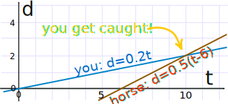
Do you see how the horse starts at 6 minutes, but then runs faster?
It seems you get caught after 10 minutes ... you only got 2 km away.
Run faster next time.
So now you know what a System of Linear Equations is.
Let us continue to find out more about them ....
Solving
There can be many ways to solve linear equations!
Let us see another example:
Example: Solve these two equations:
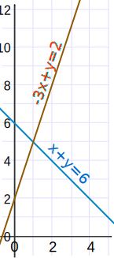
- x + y = 6
- −3x + y = 2
The two equations are shown on this graph:
Our task is to find where the two lines cross.
Well, we can see where they cross, so it is already solved graphically.
But now let's solve it using Algebra!
Hmmm ... how to solve this? There can be many ways! In this case both equations have "y" so let's try subtracting the whole second equation from the first:
Now let us simplify it:
So now we know the lines cross at x=1.
And we can find the matching value of y using either of the two original equations (because we know they have the same value at x=1). Let's use the first one (you can try the second one yourself):
And the solution is:
x = 1 and y = 5
And the graph shows us we are right!
Linear Equations
Only simple variables are allowed in linear equations. No x2, y3, √x, etc:
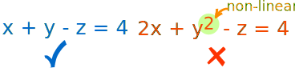
Linear vs non-linear
Dimensions
| A Linear Equation can be in 2 dimensions ... (such as x and y) |
 | |
| ... or in 3 dimensions ... (it makes a plane) |
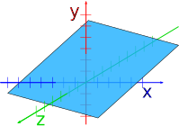 | |
| ... or 4 dimensions ... | ||
| ... or more! |
Common Variables
For the equations to "work together" they share one or more variables:
A System of Equations has two or more equations in one or more variables
Many Variables
So a System of Equations could have many equations and many variables.
Example: 3 equations in 3 variables
| 2x | + | y | − | 2z | = | 3 |
| x | − | y | − | z | = | 0 |
| x | + | y | + | 3z | = | 12 |
There can be any combination:
- 2 equations in 3 variables,
- 6 equations in 4 variables,
- 9,000 equations in 567 variables,
- etc.
Solutions
When the number of equations is the same as the number of variables there is likely to be a solution. Not guaranteed, but likely.
In fact there are only three possible cases:
- No solution
- One solution
- Infinitely many solutions
When there is no solution the equations are called "inconsistent".
One or infinitely many solutions are called "consistent"
Here is a diagram for 2 equations in 2 variables:

Independent
"Independent" means that each equation gives new information.
Otherwise they are "Dependent".
Also called "Linear Independence" and "Linear Dependence"
Example:
- x + y = 3
- 2x + 2y = 6
Those equations are "Dependent", because they are really the same equation, just multiplied by 2.
So the second equation gave no new information.
Where the Equations are True
The trick is to find where all equations are true at the same time.
True? What does that mean?
Example: You versus Horse
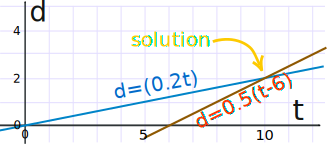
The "you" line is true all along its length (but nowhere else).
Anywhere on that line d is equal to 0.2t
- at t=5 and d=1, the equation is true (Is d = 0.2t? Yes, as 1 = 0.2×5 is true)
- at t=5 and d=3, the equation is not true (Is d = 0.2t? No, as 3 = 0.2×5 is not true)
Likewise the "horse" line is also true all along its length (but nowhere else).
But only at the point where they cross (at t=10, d=2) are they both true.
So they have to be true simultaneously ...
... that is why some people call them "Simultaneous Linear Equations"
Solve Using Algebra
It is common to use Algebra to solve them.
Here is the "Horse" example solved using Algebra:
Example: You versus Horse
The system of equations is:
- d = 0.2t
- d = 0.5(t−6)
In this case it seems easiest to set them equal to each other:
d = 0.2t = 0.5(t−6)
Now we know when you get caught!
And our solution is:
t = 10 minutes and d = 2 km
Algebra vs Graphs
Why use Algebra when graphs are so easy? Because:
More than 2 variables can't be solved by a simple graph.
So Algebra comes to the rescue with two popular methods:
- Solving By Substitution
- Solving By Elimination
We will see each one, with examples in 2 variables, and in 3 variables. Here goes ...
Solving By Substitution
These are the steps:
- Write one of the equations so it is in the style "variable = ..."
- Replace (i.e. substitute) that variable in the other equation(s).
- Solve the other equation(s)
- (Repeat as necessary)
Here is an example with 2 equations in 2 variables:
Example:
- 3x + 2y = 19
- x + y = 8
We can start with any equation and any variable.
Let's use the second equation and the variable "y" (it looks the simplest equation).
Write one of the equations so it is in the style "variable = ...":
We can subtract x from both sides of x + y = 8 to get y = 8 − x. Now our equations look like this:
- 3x + 2y = 19
- y = 8 − x
Now replace "y" with "8 − x" in the other equation:
- 3x + 2(8 − x) = 19
- y = 8 − x
Solve using the usual algebra methods:
Expand 2(8−x):
- 3x + 16 − 2x = 19
- y = 8 − x
Then 3x−2x = x:
- x + 16 = 19
- y = 8 − x
And lastly 19−16=3
- x = 3
- y = 8 − x
Now we know what x is, we can put it in the y = 8 − x equation:
- x = 3
- y = 8 − 3 = 5
And the answer is:
x = 3
y = 5
Note: because there is a solution the equations are "consistent"
Check: why don't you check to see if x = 3 and y = 5 works in both equations?
Solving By Substitution: 3 equations in 3 variables
OK! Let's move to a longer example: 3 equations in 3 variables.
This is not hard to do... it just takes a long time!
Example:
- x + z = 6
- z − 3y = 7
- 2x + y + 3z = 15
We should line up the variables neatly, or we may lose track of what we are doing:
| x | + | z | = | 6 | |||||
| − | 3y | + | z | = | 7 | ||||
| 2x | + | y | + | 3z | = | 15 |
WeI can start with any equation and any variable. Let's use the first equation and the variable "x".
Write one of the equations so it is in the style "variable = ...":
| x | = | 6 − z | |||||||
| − | 3y | + | z | = | 7 | ||||
| 2x | + | y | + | 3z | = | 15 | |||
Now replace "x" with "6 − z" in the other equations:
(Luckily there is only one other equation with x in it)
| x | = | 6 − z | ||||||||
| − | 3y | + | z | = | 7 | |||||
| 2(6−z) | + | y | + | 3z | = | 15 | ||||
Solve using the usual algebra methods:
2(6−z) + y + 3z = 15 simplifies to y + z = 3:
| x | = | 6 − z | |||||||
| − | 3y | + | z | = | 7 | ||||
| y | + | z | = | 3 | |||||
Good. We have made some progress, but not there yet.
Now repeat the process, but just for the last 2 equations.
Write one of the equations so it is in the style "variable = ...":
Let's choose the last equation and the variable z:
| x | = | 6 − z | |||||||
| − | 3y | + | z | = | 7 | ||||
| z | = | 3 − y | |||||||
Now replace "z" with "3 − y" in the other equation:
| x | = | 6 − z | |||||||
| − | 3y | + | 3 − y | = | 7 | ||||
| z | = | 3 − y | |||||||
Solve using the usual algebra methods:
−3y + (3−y) = 7 simplifies to −4y = 4, or in other words y = −1
| x | = | 6 − z | |||||||
| y | = | −1 | |||||||
| z | = | 3 − y | |||||||
Almost Done!
Knowing that y = −1 we can calculate that z = 3−y = 4:
| x | = | 6 − z | |||||||
| y | = | −1 | |||||||
| z | = | 4 | |||||||
And knowing that z = 4 we can calculate that x = 6−z = 2:
| x | = | 2 | |||||||
| y | = | −1 | |||||||
| z | = | 4 |
And the answer is:
x = 2
y = −1
z = 4
Check: please check this yourself.
We can use this method for 4 or more equations and variables... just do the same steps again and again until it is solved.
Conclusion: Substitution works nicely, but does take a long time to do.
Solving By Elimination
Elimination can be faster ... but needs to be kept neat.
"Eliminate" means to remove: this method works by removing variables until there is just one left.
The idea is that we can safely:
- multiply an equation by a constant (except zero),
- add (or subtract) an equation on to another equation
Like in these examples:
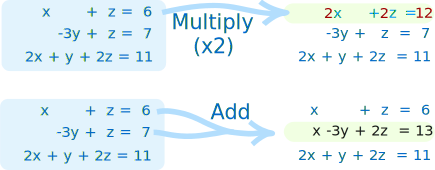
WHY can we add equations to each other?
Imagine two really simple equations:
x − 5 = 3
5 = 5
We can add the "5 = 5" to "x − 5 = 3":
x − 5 + 5 = 3 + 5
x = 8
Try that yourself but use 5 = 3+2 as the 2nd equation
It will still work just fine, because both sides are equal (that is what the = is for!)
We can also swap equations around, so the 1st could become the 2nd, etc, if that helps.
OK, time for a full example. Let's use the 2 equations in 2 variables example from before:
Example:
- 3x + 2y = 19
- x + y = 8
Very important to keep things neat:
| 3x | + | 2y | = | 19 | |||
| x | + | y | = | 8 |
Now ... our aim is to eliminate a variable from an equation.
First we see there is a "2y" and a "y", so let's work on that.
Multiply the second equation by 2:
| 3x | + | 2y | = | 19 | |||
| 2x | + | 2y | = | 16 |
Subtract the second equation from the first equation:
| x | = | 3 | |||||
| 2x | + | 2y | = | 16 |
Yay! Now we know what x is!
Next we see the 2nd equation has "2x", so let's halve it, and then subtract "x":
Multiply the second equation by ½ (i.e. divide by 2):
| x | = | 3 | |||||
| x | + | y | = | 8 |
Subtract the first equation from the second equation:
| x | = | 3 | |||||
| y | = | 5 |
Done!
And the answer is:
x = 3 and y = 5
And here is the graph:
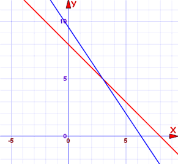
The blue line is where 3x + 2y = 19 is true
The red line is where x + y = 8 is true
At x=3, y=5 (where the lines cross) they are both true. That is the answer.
Here is another example:
Example:
- 2x − y = 4
- 6x − 3y = 3
Lay it out neatly:
| 2x | − | y | = | 4 | |||
| 6x | − | 3y | = | 3 |
Multiply the first equation by 3:
| 6x | − | 3y | = | 12 | |||
| 6x | − | 3y | = | 3 |
Subtract the second equation from the first equation:
| 0 | − | 0 | = | 9 | |||
| 6x | − | 3y | = | 3 |
0 − 0 = 9 ???
What is going on here?
Quite simply, there is no solution.
| They are actually parallel lines: | 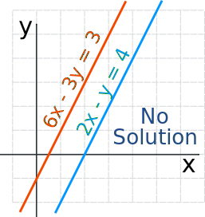 |
And lastly:
Example:
- 2x − y = 4
- 6x − 3y = 12
Neatly:
| 2x | − | y | = | 4 | |||
| 6x | − | 3y | = | 12 |
Multiply the first equation by 3:
| 6x | − | 3y | = | 12 | |||
| 6x | − | 3y | = | 12 |
Subtract the second equation from the first equation:
| 0 | − | 0 | = | 0 | |||
| 6x | − | 3y | = | 3 |
0 − 0 = 0
Well, that is actually TRUE! Zero does equal zero ...
... that is because they are really the same equation ...
... so there are an Infinite Number of Solutions
| They are the same line: | 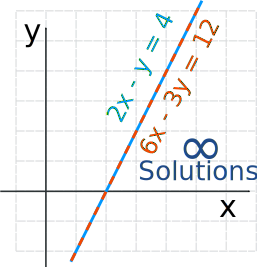 |
And so now we have seen an example of each of the three possible cases:
- No solution
- One solution
- Infinitely many solutions
Solving By Elimination: 3 equations in 3 variables
Before we start on the next example, let's look at an improved way to do things.
Follow this method and we are less likely to make a mistake.
First of all, eliminate the variables in order:
- Eliminate xs first (from equation 2 and 3, in order)
- then eliminate y (from equation 3)
So this is how we eliminate them:
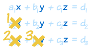
We then have this "triangle shape":
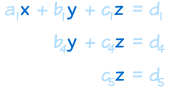
Now start at the bottom and work back up (called "Back-Substitution")
(put in z to find y, then z and y to find x):
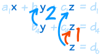
And we are solved:
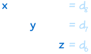
ALSO, we will find it is easier to do some of the calculations in our head, or on scratch paper, rather than always working within the set of equations:
Example:
- x + y + z = 6
- 2y + 5z = −4
- 2x + 5y − z = 27
Written neatly:
| x | + | y | + | z | = | 6 | |||
| 2y | + | 5z | = | −4 | |||||
| 2x | + | 5y | − | z | = | 27 |
First, eliminate x from 2nd and 3rd equation.
There is no x in the 2nd equation ... move on to the 3rd equation:
Subtract 2 times the 1st equation from the 3rd equation (just do this in your head or on scratch paper):
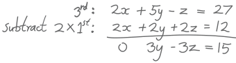
And we get:
| x | + | y | + | z | = | 6 | |||
| 2y | + | 5z | = | −4 | |||||
| 3y | − | 3z | = | 15 |
Next, eliminate y from 3rd equation.
We could subtract 1½ times the 2nd equation from the 3rd equation (because 1½ times 2 is 3) ...
... but we can avoid fractions if we:
- multiply the 3rd equation by 2 and
- multiply the 2nd equation by 3
and then do the subtraction ... like this:
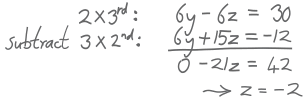
And we end up with:
| x | + | y | + | z | = | 6 | |||
| 2y | + | 5z | = | −4 | |||||
| z | = | −2 |
We now have that "triangle shape"!
Now go back up again "back-substituting":
We know z, so 2y+5z=−4 becomes 2y−10=−4, then 2y=6, so y=3:
| x | + | y | + | z | = | 6 | |||
| y | = | 3 | |||||||
| z | = | −2 |
Then x+y+z=6 becomes x+3−2=6, so x=6−3+2=5
| x | = | 5 | |||||||
| y | = | 3 | |||||||
| z | = | −2 |
And the answer is:
x = 5
y = 3
z = −2
Check: please check for yourself.
General Advice
Once you get used to the Elimination Method it becomes easier than Substitution, because you just follow the steps and the answers appear.
But sometimes Substitution can give a quicker result.
- Substitution is often easier for small cases (like 2 equations, or sometimes 3 equations)
- Elimination is easier for larger cases
And it always pays to look over the equations first, to see if there is an easy shortcut ... so experience helps.